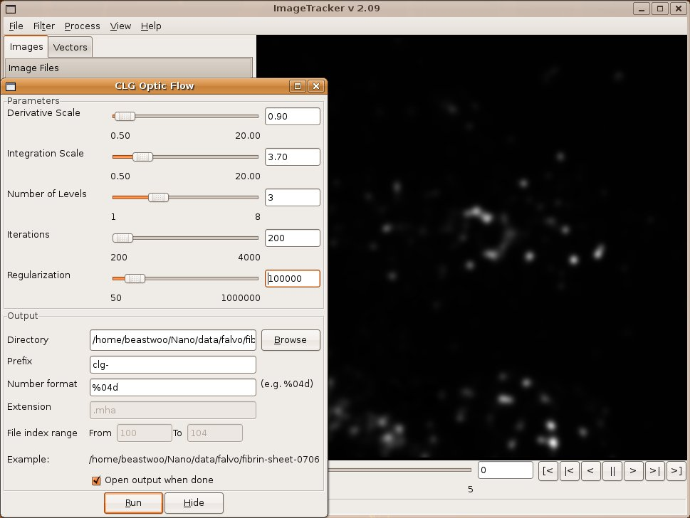

Table of Contents
- Introduction
- Installation
- Working with Images
- Loading Images
- Loading Vectors
- Vector Visualization
- Image Controls
- Saving Visualizations
- Filters
- Saving Filter Images
- Threshold
- Gaussian
- Gradient Magnitude
- Logarithm
- Flatfield
- Processes
- Remove Occlusions
- Stabilize
- Apply Transform
- CLG Optical Flow
- Horn Optical Flow
- Integrate Flow
- Version History
- Version 3.00
- Version 2.08
- Version 2.07
- Version 2.06
- Version 2.05
- Version 2.04
- Version 2.03
- Version 2.02
- Version 2.01
- Version 2.00
- Version 1.00
Introduction
ImageTracker is an application designed to track and measure motion in image sequences. Videos often contain motion of several types, and analysis of these motions can be difficult. For example, videos of cells dividing show the cell moving within solution, kinetochores moving back and forth accross the cell equator, and microtubule structures migrating from the equator to the poles. ImageTracker enables analysis of this type of motion through a multiscale approach. The video is first stabilized with respect to global motion and flow analysis of smaller scale structures follows.
ImageTracker was written to analyze microscopy videos. Several challenges in analyzing microscopy video mean ImageTracker's performance will depend partially on the nature of the video being analyzed. In particular, performance may suffer on videos that have low signal-to-noise ratio, poor feature resolution, sparse temporal sampling (objects move too much between fames), and short object life (features appear and disappear frequently).
The text of this guide refers to the Windows version of ImageTracker, but the screenshots are of the Linux version. The difference between ImageTracker versions on these two platforms is purely aesthetic.
Installation
Remove previous versions of ImageTracker from your computer before installing updates. To uninstall ImageTracker, select Start—>All Programs—>NSRG—>ImageTracker—>Uninstall ImageTracker from the start menu.
Note: ImageTracker is a stand-alone application and does not require the NSRG Runtime.
Download and execute the installer from the NSRG download page. The NSRG developers recommend that you accept all default parameters in order to conform to NSRG standards. This will create a folder on your harddrive, C:\NSRG\bin\ImageTracker, and will add to your programs menu a folder NSRG\ImageTracker.
Run ImageTracker by selecting Start—>All Programs—>NSRG—> ImageTracker—>ImageTracker.
The ImageTracker main window.
Program information will be written to a logging file at various points during execution. This information may be useful for making sure the application is still running or troubleshooting the application if something goes wrong. You can view the log messages by selecting View—>Logger. Each log message has an associated logging level on the following scale of increasing severity: Verbose, Debug, Info, Warn, Error. From the logging window you can limit what messages get logged—all messages at or above the selected logging level will be written. Info is the recommended logging level; lower levels can produce enough messages to noticably slow down the application. The log messages displayed in the logger dialog do not update automatically. Press the Refresh button to refresh the logger messages.
Occasionally messages from libraries ImageTracker depends on may be printed to other locations. Some of the ITK classes used in image registration print messages to the console (standard out) if ImageTracker is launched from a command line (not common on Windows). VTK classes sometimes print messages to a separate logging window; this usually indicates something has gone very wrong with the visualization system.
The progress dialog displayed while ImageTracker is performing image registration.
Working with Images
ImageTracker operates on stacks of individual image files; a set of images constitutes a video. ImageTracker can read many types of images, including TIFF, PNG, JPG, MHA, and VTK. There have been some problems reading some types of TIFF images, but this should be remedied as of ImageTracker v2.00. Currently, ImageTracker does not support metamorph stacks, video files (e.g. AVI, WMV), or raw camera files. Software such as ImageJ can be used to convert images in these file formats into a format ImageTracker can read.
Loading Images
The Image Files control panel specifies which image files are loaded in ImageTracker.
- Example
- Select a single image, and let ImageTracker find files with the same naming convention. This is the easiest way to specify a series of files.
- Selection
- Select multiple files to add to the file list. The file names will be sorted alphabetically as they are added. A maximum of around 1000 file names can be selected at one time.
- Pattern
- Specify a file series naming convention pattern by selecting a root directory, file prefix, number format, file extension, and numeric range. Press the Enter key as you modify each field in the pattern specification dialog to update the example name displayed below. (This option is seldom used— use it if you have a large number of files in a series, but only want to operate on a subset of that series.)
- Remove
- Remove any selected file names from the list.
Loading Vectors
A vector image is an image in which every pixel contains vector information instead of intensity information. For example, the output of an optical flow computation, discussed elsewhere in this guide, is a vector image that explains the motion of intensities between images.
Vector data is loaded in a similar way to image data. Click on the Vectors tab of the data control panel to bring up the vector file control panel. A list of vector image files can be modified in the same way as the list of image files on the Images tab. The visualization control panel below the vector file list provides options for how to display the vector image data.
Vector Visualization
Vector images can be displayed with two different visualizations: Glyph and Height Map. The Method combo box in the vector visualization control panel selects between these two options. Controls below this combo box enable modifying aspects of the visualization.
Note: if the controls for the current visualization are not visible (this sometimes happens when the vector images are automatically loaded as the result of a processing task), press the Apply button below the vector image list. This should update the control panel.
ImageTracker's vector glyph visualization.
{kind=link}
ImageTracker's vector height map visualization.
{kind=link}
Other Visualization Options
ImageTracker provides visualization for computed flow fields (as of version 2.06). ParaView, a free application from Kitware, provides a more flexible visualization application that may be useful when ImageTracker's visualizations are not sufficient. Follow the instructions from Kitware on how to install and run ParaView.
Another option for people familiar with VTK is VisTrails, a visualization workflow application from the University of Utah.
Image Controls
ImageTracker displaying an image sequence of fibrin sheet manipulation.
To change the magnification of the current image, right click on the image, and drag the mouse up or down. To move the current image, center click on the image and drag the mouse in the desired direction. To rotate an image, left click on the image and drag the mouse.
The Window/Contrast dialog controls display properties of images in ImageTracker.
{kind=link}
Image size and intensity statistics for the currently displayed image can be shown by selecting View—>Image Info from the menu. This will display the Logger window with the most recent message containing the image information. Note that a log level of Info or lower needs to be selected in order for the image information to be displayed.
The image frame control in ImageTracker.
{kind=link}
Images and vector visualizations are displayed simultaneously. The frame index range is based on the larger of the number of loaded images and loaded vectors. If the two sequences are of different sizes, the visualization from the shorter sequence will no longer update once the frame index exceeds the length of that sequence.
Saving Visualizations
To save a visualization displayed by ImageTracker, select File—>Save View Images. This will bring up a dialog that enables selecting an output directory, file naming convention, and the range of frames to save. The images saved will be exactly what is displayed in the ImageTracker image panel. To save the result of applying a set of filters, see the Filters section below.
Warning: Do not let any other window obscure the ImageTracker image display panel and do not minimize ImageTracker when saving visualizations. Doing so will corrupt the saved images. The frame index slider provides progress information and a message will be displayed when ImageTracker has finished saving the visualizations.
Warning: If you save a set of visualizations, then resize the image display panel, and then try to save another set of visualizations, ImageTracker will crash. The VTK class responsible for capturing images from the image display panel does not handle this gracefully.
Filters
ImageTracker has two main image manipulation modes: filtering and processing. Filtering applies an operation on images as they are displayed in the ImageTracker image panel, and results are visible instantly. (This is similar to filtering in other imaging applications such as ImageJ or Gimp.) Processing typically involves more complex computations that create a new set of output images; those new images must be loaded into ImageTracker to see the results of a processing task.
Filtering is often used to prepare an image set for processing. The list at the top of the Images tab in the control panel contains the names of all filters that are being actively applied. The Image Files filter is a special filter that is always present and can be used to load image files as shown above. Other filters can be added to the list by selecting them from the Filters menu. Filters are chained and applied in the order that they appear in this list. Selecting any filter in the filter list displays that filter's configuration panel below the filter list. Changes to filter parameters are visible instantly in the image window.
The Remove button at the bottom of the filter list removes the currently selected filter from the filter list. The Image Files filter is a special filter that cannot be removed (with no image files loaded there is no image data to filter). The Clear button resets the filter list to its initial state with no filters or image files loaded.
Saving Filter Images
A set of filtered images can be saved by selecting File—>Save Filter Images from the menu. This will save the output from the filter pipeline that is displayed in the image filter list, not the visualization displayed in the image panel. Save Filter Images dialog includes controls for specifying the output directory and file naming convention to use. There are also several output options:
- Pixel Type
- Specifies the data type of pixels in the output images. Use 16-bit for images with intensities in the normal camera output range (floating point values will be truncated). Use floating point for computed images that have small fractional values.
- Rescale Intensities
- When this box is checked, the output image intensities will be rescaled to match the full range allowed by the output pixel type.
Note: Saving filter pipeline output requires understanding a little about image file types. ImageTracker can save image files in any format supported by ITK. This includes TIFF, PNG, JPG, MHA, and VTK among many others. Some file types (e.g. TIFF and PNG) only allow integer pixel types, and specifying a floating point pixel type will likely produce an error. When saving floating point images, be sure to select a file extension that has floating point support (e.g. MHA and VTK).
Threshold
The Threshold filter limits the range of intensities present in an image.
- Upper and Lower Bound
- Sliders that adjust the range of pixel intensities that pass through the threshold filter.
- Range
- Controls the range of pixel intensities displayed on the threshold bound sliders. There are presets for 8-bit and 16-bit images, and an option for setting the slider range to match the intensities of the current input image.
Gaussian
The Gaussian filter applies smoothing to an image.
- X- and Y-direction Scale
- Sliders that select the Gaussian kernel scale along the x and y dimension of the input image. The scale determines the standard deviation of the Gaussian kernel in pixel units.
- Lock
- When the Lock button is depressed, the X- and Y-direction Scale sliders will move together.
- X- and Y-direction Order
- Controls the order of the Gaussian filter applied along each dimension.
Gradient Magnitude
The Gradient Magnitude filter finds edges in an image.
{kind=link}
- Scale
- The spatial scale of the Gaussian kernels used in gradient computation. Larger values find the edges of larger image features.
- Normalize Across Scale
- When this option is checked, the brightness of the filtered image will not fade at larger spatial scales. When this option is disabled, use the Window/Contrast control to rescale the contrast if the image becomes dim.
Logarithm
The Logarithm filter takes the logarithm (base 10) of an image. Zero values in the input image are mapped to zero values in the output image. This filter has no options.
Flatfield
Flatfielding corrects for imaging artifacts such as constant occlusion and uneven illuminaton.
{kind=link}
- Flat Image
- Specifies whether flatfielding should be applied. When checked for the first time, this control prompts for the flatfield image. To select a different flatfield image, use the Browse button.
- Background Image
- Specifies whether background subtraction should be applied. When checked for the first time, this control propmts for the background image. To select a different background image, use the Browse button.
Processes
Processes in ImageTracker are generally more computationally intense than filters. For example, optical flow computation finds a motion field that expains the intensity changes between images in a sequence. The optical process results in a set of output vector images saved to disk. Once the process launches, ImageTracker performs the flow computation on all image pairs in the sequence. When the process is complete, ImageTracker may automatically load the result.
Saving Data
This control panel is common to all ImageTracker processes that output images.
- Directory
- The directory in which to save all output files
- Prefix
- The prefix to apply to saved images
- Number format
- A C-style number format, e.g. %04d, which means a zero-padded 4 digit integer
- Extension
- The file type extension to apply; ImageTracker will often choose this for you
- File index range
- The beginning and ending index for the file sequence; ImageTracker will often choose this for you
Note: ImageTracker saves images in 16 bit grayscale format. 16 bit images may appear completely dark in image viewers that only handle 8 bit images. ImageTracker, of course, is a 16 bit image viewer, and can be used to view the images it outputs.
Remove Occlusions
Removing fixed partial occlusions from a video of beating cilia. Before (left) and after (right) partial occlusion removal.

Select Process—>Remove Occlusions to show the Remove Partial Occlusions dialog. The following parameters specify how occlusion removal will be attempted:
- Metric
- Specifies the computation that will be used to estimate the constant amount of light absorbed at each image location. The Mean metric is faster but the Median metric perfoms better if there are slow moving objects in the specimen.
- Max Transmission
- This setting adjusts the overall brightness of the final images. Select 100 to only increase the brightness of the image everywhere. Select 50 to maintain the average intensity between the input and output images. Note that some intensity values of the output images may become clipped to the maximum allowable output level. If this happens (the resulting images will looked washed out or saturated), decrease the value of this slider.
- Fourier Padding
- This value is seldom changed. The padding slider corresponds to a windowing applied to images when using the Median transmission metric. The default value of 0.5 will use a window of half the image size on each boundary when computing Fourier transforms.
- Output
- The common output options are available.
- Transmission Map
- This is an image file in which to store the transmission map. Use an image type that supports floating point, such as MHA or VTK.
- Open output when finished
- If this box is checked, automatically load the output images when finished.
Stabilize
Multiple resolution registration in action.
{kind=link}
A six level image pyramid.
{kind=link}
Launch the Multi-Resolution Registration dialog by selecting Process—>Stabilize from the ImageTracker menu. The alignment dialog consists of the following options:
- Smoothing
- Defines the resolution bounds of the multiscale pyramid. Adjusting either of these sliders updates the image in the image panel to show the effect of the smoothing.
- Maximum Smoothing
- Adjust the Maximum Smoothing to smooth all but the coarsest image features that should be aligned.
- Minimum Smoothing
- Adjust the Minimum Smoothing to smooth noise and any small scale features that should not be considered for alignment.
- Optimization
- The parameters in this section are seldom changed. These parameters change the inner-workings of the multiresolution registration algorithm.
- Iterations
- The maximum number of alignments to try at each resolution scale.
- Initial Maximum Step Length
- The largest translation (in pixel units) to try at each alignment iteration at the coarsest scale.
- Initial Minimum Step Length
- The smallest translation (in pixel units) to try at each alignment iteration at the coarsest scale; for motion below this, the algorithm continues to the next resolution.
- Inter-level Step Scale
- The factor by which to divide the Step Lengths at each finer scale.
- Output
- The common output options are available.
- Transform File
- A text file in which to store the image alignment transforms. This file is useful to apply the same alignment to a different set of images (e.g. for multi-channel imaging.
- Open output when finished
- If this box is checked, automatically load the output images when finished.
Note: ImageTracker adds black pixels to transformed images where there is no original image data. Because ImageTracker also rescales images to maximize contrast when displaying images, it may appear that the image intensity has shifted in transformed images.
Apply Transform
Applying a set of transforms from a previous alignment to a new data source.
- Transform File
- Specify the text file that contains the transfrom information from the previous image registration. This should be output from a Stabilize process.
- Output
- The common output options are available.
- Open output when finished
- If this box is checked, automatically load the output images when finished.
CLG Optical Flow
ImageTracker provides methods to determine the image motion from an image sequence. Optical flow is an estimation of real world motion projected onto the image plane. In the case of 2D motion where the image plane is parallel to the motion plane, optical flow is a good estimate of real world motion. This scenario is common in microscopy. Flow computation results in a vector image in which each pixel vector represents the computed velocity in the image's x and y directions. Vector images can be loaded and viewed from the Vectors data tab.
 Computing the optical flow of a microscopy video.
{kind=link}
To compute optical flow, select Process—>CLG Optical Flow from the menu. When the CLG Optical Flow dialog is active, the image displayed in the image panel will be filtered with a Harris feature detector. This image is useful for determining the Derivative and Integration scale parameters. The goal is to adjust these scale parameters such that the features of interest appear as distinct blurry blobs. The CLG process has the following options:
- Derivative Scale
- The spatial scale used to compute image derivatives; adjust this to the noise level present in the images.
- Integration Scale
- The spatial scale used when integrating local regions of the image. Adjust this to the size of the predominant features that are being tracked.
- Number of Levels
- The number of resolution levels to use in the computation. More levels are required if there are larger motions between frames.
- Iterations
- Specifies the number of iterations to complete when minimizing the error functional at each resolution level; more iterations will presumably provide a lower error residual but will take longer.
- Regularization
- Adjusts the constant scaling of the smoothness term in the energy functional; a larger number will result in smoother flow fields, a smaller number will allow more turbulent flow fields. For 16 bit images, this number needs to be rather large, like 10e4. For 8 bit images, 100-200 is a reasonable range.
- Output
- The common output options are available.
- Open output when finished
- If this box is checked, automatically load the output images when finished. Remember that vector images and visualizations are controlled from the Vectors data tab.
Click the Run button to start the optical flow computation. ImageTracker's implementation of the algorithm is notoriously slow to run; the progress bar will provide an estimate of how long the process will take after computing the flow for the first image pair. When analyzing long image sequences, it is advisable to try the flow computation on a shorter image sequence to find an appropriate set of parameters and then analyze the full image sequence with the same settings.
Hornn & Schunck Optical Flow
This process is seldom used because the CLG Optical Flow implementation is superior in several ways. The Horn and Schunck optical flow computation is a classic motion estimation algorithm that uses only the global term from the CLG computation. This process remains for comparison purposes only. The following parameters control this process:
- Derivative Scale
- The spatial scale used to compute image derivatives; adjust this to the noise level present in the images.
- Iterations
- Specifies the number of iterations to complete when minimizing the error functional for each image pair; more iterations will presumably provide a lower error residual but will take longer.
- Regularization
- Adjusts the constant scaling of the smoothness term in the energy functional; a larger number will result in smoother flow fields, a smaller number will allow more turbulent flow fields. For 16 bit images, this number needs to be rather large, like 10e4. For 8 bit images, 100-200 is a reasonable range.
- Output
- The common output options are available.
- Open output when finished
- If this box is checked, automatically load the output images when finished. Remember that vector images and visualizations are controlled from the Vectors data tab.
Integrate Flow
The flow integration dialog.
- Step size
- Specifies the step size (in frames) of the Runge-Kutta 4th order integration. The integration process saves results at the nearest whole step size, to match the spacing of input flow data. So, with a step size of 0.1 frames, displacement images will be saved every 10 steps.
- Output
- The common output options are available.
- Open output when finished
- If this box is checked, automatically load the output images when finished. Remember that vector images and visualizations are controlled from the Vectors data tab.
Version History
The sections below outline the changes made to ImageTracker at each revision.
Version 3.00
Features
- Redesign of data management makes it easier to understand which images and vectors are opened.
- Ability to apply filters to loaded images and construct a filter pipeline.
- Filters: Threshold, Flatfield, Gaussian, Gradient Magnitude, Logarithm.
- Ability to save filtered images.
- Multiresolution implementation of CLG Optical Flow.
- Scalar and vector images reliably load after computation process are completed.
- Choice between vector glyph and heigh map visualizations.
- Log messages sent to a log file. Logger panel and controls moved to a separate dialog.
- View contrast control moved to a separate dialog.
- Fixed inconsistent saving of output images to non-default directories.
- Pixel type no longer needs to be selected when loading images.
- Menu option enables turning on and off image sequence looping.
- Manual launches from the Help menu.
Known bugs
- ImageTracker occasionally crashes when a process finishes on Linux.
- Preview Harris feature detector on CLG dialog should always auto-adjust contrast.
- Vector visualization control not always visible initially (if loaded after a process finishes).
- Not all file selection dialogs have appropriate file filters configured.
- Image panel does not clear visualization when all data has been removed/cleared until a render event gets triggered.
- Image index slider is not always synced with currenlty displayed image, especially during and after running processes and loading new data.
Version 2.08
This was a recompilation of version 2.07 using an installer that worked on more Windows machines.
Version 2.07
Features
- Data source selection based on matching single file naming convention
- Common control panel for specifying saved image file names
- Documentation includes instructions for compiling on Linux
Known bugs
- The installer does not seem to work on some Windows machines (fixed: v2.08)
- Some output files (like transforms and transmission maps) do not save to the appropriate output directories. (fixed: 3.00)
Version 2.06
Features
- Vector image visualization
- Scalar image contrast adjustment
- More control over frame selection—single frame skip, and go to frame
- Visualization image saving
- Flow integration
Known bugs
- ImageTracker sometimes hesitates a long time after selecting many image files for a data source.
- wxWidgets truncates a data source file list if selecting more than ~1000 images. Loading large data sources may require selecting image files in chunks. (work around: v2.07)
- If the image window size changes after saving one set of visualization images ImageTracker may subsequently saves corrupted visualizations.
- Image spacing information is not preserved on all operations (e.g. Occlusion Removal).
- The default directory from which to load image data seems to get stuck—it should always use the most recently used directory. (Seems Windows-specific.) (Partial solution: v2.07)
- There is no check that a processing task can be performed on a selected data source; this can lead to a crash for mismatched data sources and processes. (resolved: v3.00)
Version 2.05
Features
- Significant usability improvements and bug fixes
- Progress bars for all image processing tasks
- Thread-safe logging keeps the logger window updated during heavy processing
- Play, stop, rewind, and skip-to-end buttons control image display
- Horn & Schunck optical flow computation
- Image information logging on demand
- Slicker looking documenation
Known bugs
- Some GUI elements may be unresponsive after an image processing task completes; the video control buttons (play, rewind, etc), however, work fine and pressing any of them seems to fix the unresponsiveness. (fixed: v3.00)
- If the system font size is set to be large, some dialog elements may be cut off or shortened; usually manually resizing dialog boxes resolves this issue, though some text fields are still set to be quite small.
- The upper threshold slider is set improperly on the multiple-resolution registration dialog box; the application code really, really, tries to set this—the same style code works for setting up the range on 16-bit images. (fixed: v2.06)
Version 2.04
Features
- Minor bug fixes, including file naming and a correction of the sign of computed flow fields
Version 2.03
Features
- Remove fixed partial occlusions from brigt-field microscopy videos
- Apply transforms from one image registration to another set of images
- Better image file managment, including data sources and the ability to specify the pixel type of image files
- A data source frame slider that cycles through image files in data sources
- Automatic openning of image processing results
- Better image preview ability—while a dialog with preview component is visible, that preview appears in the ImageTracker main window; the preview is removed with the dialog is closed
- Adjustable size logging and data source panels
- Feature-based tracking has been removed
Known bugs
- When selecting a group of files to constitute a data source, the last file is inserted at the top of the list. This only occurs on Windows XP, so this may be a wxWidgets compatibility issue. (fixed: v2.05)
- Sometimes dialogs stay open and become unresponsive when an operation finishes. If this happens, select the ImageTracker menu item that launched the dialog initially. The dialog can then be closed. This problem only occurs on Windows XP, so this may be a wxWidgets compatibility issue. (fixed: v2.05)
- The logging window does not always update while processes are running. It is advisable to try a processing task with a small set of images first, to gauge how long it might take. (fixed: v2.05)
- If two data sources with different image counts are loaded in ImageTracker, the application may crash when the frame slider overruns the index of the shorter data source. (fixed: v2.06)
- If the ImageTracker main window split panes (which separate the logging and data source panels from the image panel) are collapsed, there is no way to recover the hidden panels.
Version 2.02
Features
- A multiple resolution registration method that provides faster, more robust, and more flexible image alignment
- Enhanced support for saving different types of images, notably TIFFs
- Adjustable logging message level in help menu
Version 2.01
Features
- A new main application window combines an image file list, image window, and logging window all in one
- Images are displayed with VTK, allowing zooming, and panning transformations
- TIFF images still supported (this sounds like a non-feature, but it was a significant amout of work to keep TIFFs supported with the new application structure)
- Stand-alone executable (no DLLs required)
Known bugs
- Some TIFF images may not save (e.g. for global registration). (resolved: v3.00)
- ParaView will not read some flow fields generated by ImageTracker; this seems very random, as changing a parameter slightly may generate a readable flow field.
Version 2.00
Features
- Feature-based tracking
- CLG optical flow computation
- 8 and 16 bit images supported
- TIFF images supported
- Better image data management
Known bugs
- Feature tracking may fail if fewer features are found in an image than are specified to track.
- Reloading the Feature Tracker dialog does not reflect changes to the current images list (fixed: v2.01).
Version 1.00
Features
- Loading and viewing images sequences
- Global registration of image sequences
- Threshold prefilter for registration
- Smoothing prefilter for registration
- Saving registration transform data and transformed original image files.
- Multi-level logging to window
Known bugs
- Images other than 8-bin PNG may not load properly. (fixed: v2.00)
- Image canvas disappears on occasion; when viewing lots of images or resizing image canvas. (fixed: v2.00)
- Large images may cause exceptions on resizing canvas. (fixed: v2.00)
- Memory leak: memory use grows when running registration multiple times. (fixed: v2.00)